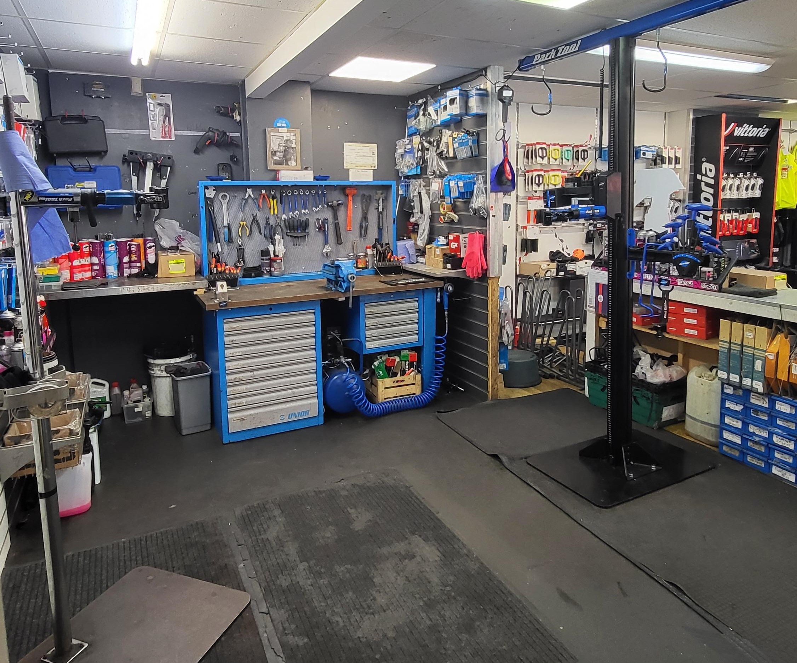

Welcome to Aurora Bike — a studio to build, repair and maintenance your dream bicycle.
I am a student at Metropolia UAS and a professional bike mechanic. In my free time, I offer bicycle repair and maintenance services. I work on all types of bikes, including mountain bikes, road bikes, folding bikes, touring bikes, and e-bikes. I am located in Espoo Keskus, and my service covers the Helsinki Capital ABC Region. You can drop your bike off at my place. If the minimum charge reaches 40 euros, I can come directly to your home for repairs and maintenance, and I also offer free pick-up and delivery.
Feel free to contact me with a photo of your bike, a description of the issue, and your location.